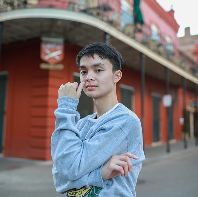

Who I Am
This portfolio is a reflection of my walk with God, my growth in skill, and my creative journey through projects I enjoyed and learned from.
Milestone Projects
- Wrote and self-published a book on healing through faith and nutrition
- Rebuilt a custom café racer motorcycle from the frame up
- Restored old car body panels using spot welding and refinishing
- Worked in warehousing, developing a strong work ethic and discipline
Projects I'm Working On
- Launching a faith-based virtual restaurant: The Food by God
- Studying ASE certifications to become a skilled mechanic
- Building this website to glorify God and inspire others
- Learning how to create music that reflects peace and purpose
Things That Bring Me Joy
- Fixing things with my hands—engines, electronics, and furniture
- Designing and creating—whether through 3D printing, art, or writing
- Cooking nourishing meals rooted in natural healing
- Riding motorcycles and restoring gear
- Spending time in God’s Word and sharing wisdom with others